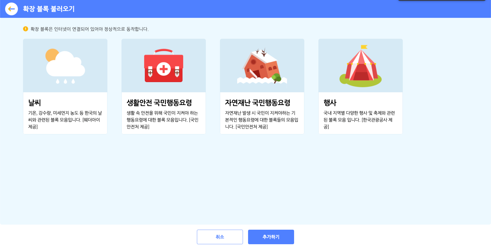

확장 블록
확장 블록 불러오기 팝업

확장 블록 카테고리의 블록 꾸러미에 있는 ‘확장 블록 가져오기’ 버튼을 클릭하면 나타나는 팝업 창입니다.
추가 블록 모음을 선택하고 아래의 ‘추가하기’ 버튼을 클릭해서 블록 꾸러미에 불러올 수 있어요. 중복 선택이 가능해요.
아래는 확장 추가 블록 모음의 종류입니다.
- 날씨 : 기온, 강수량, 미세먼지 농도 등 한국의 날씨와 관련된 블록 모음입니다. [웨더아이 제공]
- 생활안전 국민행동요령 : 생활 속 안전을 위해 국민이 지켜야 하는 행동요령에 대한 블록 모음입니다. [국민안전처 제공]
- 자연재난 국민행동요령 : 자연재난 발생 시 국민이 지켜야 하는 기본적인 행동요령에 대한 블록 모음입니다. [국민안전처 제공]
- 행사 : 국내 지역별 다양한 행사 및 축제와 관련된 블록 모음입니다. [한국관광공사 제공]
날씨
기온, 강수량, 미세먼지 농도 등 한국의 날씨와 관련된 블록 모음입니다. [웨더아이 제공]
아래는 날씨 확장 블록에서 선택할 수 있는 항목입니다.
- 날짜
어제,오늘,내일,모레,3일 후,4일 후,5일 후,6일 후
- 시/도 (지역)
서울,강원,경기,경남,경북,광주,대구,대전,부산,세종,울산,인천,전남,전북,제주,충남,충북
- 시/군/구 (지역)
- 선택한 시/도에 따라 달라집니다.
- 날씨
맑음,구름조금,구름많음,흐림,비,진눈깨비,눈
- 정보
최저기온(ºc),최고기온(ºc),습도(%),강수량(mm),강수확률(%),풍속(m/s)
1. <[오늘] [서울] [전체] 의 날씨가 [맑음] 인가?>
선택한 날짜와 지역의 실제 날씨가 선택한 날씨와 같다면 참, 아니라면 거짓으로 판단하는 블록입니다.
목록 상자()를 클릭하면 날짜와 지역, 날씨를 선택할 수 있어요.
2. <현재 [서울] [전체] 의 미세먼지 등급이 [좋음] 인가?>
선택한 지역의 실제 미세먼지 등급이 선택한 등급과 같다면 참, 아니라면 거짓으로 판단하는 블록입니다.
목록 상자()를 클릭하면 지역과 등급을 선택할 수 있어요.
3. ([오늘] [서울] [전체] 의 [최저기온(ºc)])
선택한 날짜와 지역의 정보를 가져오는 값 블록입니다.
목록 상자()를 클릭하면 날짜와 지역, 정보를 선택할 수 있어요.
4. (현재 [서울] [전체] 의 [기온(ºc)])
현재 시각에서 선택한 지역의 정보를 가져오는 값 블록입니다.
과 달리 현재 시각을 반영해요.
목록 상자()를 클릭하면 지역과 정보를 선택할 수 있어요.
5. (오늘 [서울] [전체] 의 [00] 시 기온)
선택한 지역에서 오늘의 시간대별 기온을 가져오는 값 블록입니다.
목록 상자()를 클릭하면 지역과 시간대를 선택할 수 있어요.
생활안전 국민행동요령
생활 속 안전을 위해 국민이 지켜야 하는 행동요령에 대한 블록 모음입니다. [국민안전처 제공]
아래는 생활안전 국민행동요령 확장 블록에서 선택할 수 있는 항목입니다.
- 생활 속 문제
응급처치,심폐소생술,소화기/소화전 사용법,식중독,산행안전,실종유괴,성폭력,학교폭력,가정 폭력,억류 및 납치,교통사고,승강기 안전사고,미세먼지
- 상황
- 선택한 생활 속 문제에 따라 달라집니다.
1. ([응급처치] 에서 [화상 처치] 방법의 수)
선택한 생활 속 문제에서 해야 할 행동요령의 수를 가져오는 값 블록입니다.
목록 상자()를 클릭하면 생활 속 문제와 행동요령을 선택할 수 있어요.
2. ([응급처치] 에서 [화상 처치] 방법 (1) 번째 항목)
선택한 생활 속 문제에서 해야 할 행동요령 중 입력한 순서( )에 맞는 것을 가져오는 값 블록입니다.
)에 맞는 것을 가져오는 값 블록입니다.
목록 상자()를 클릭하면 생활 속 문제와 행동요령을 선택할 수 있어요.
자연재난 국민행동요령
자연재난 발생 시 국민이 지켜야 하는 기본적인 행동요령에 대한 블록 모음입니다. [국민안전처 제공]
아래는 자연재난 국민행동요령 확장 블록에서 선택할 수 있는 항목입니다.
- 자연재난
태풍,홍수,호우,강풍,대설,한파,풍랑,황사,폭염,가뭄,지진,해일,산사태
- 상황
- 선택한 자연재해가 오기 전/왔을 때/지나간 후
1. ([태풍] [태풍이 오기 전] 해야할 행동요령 수)
선택한 자연재난에서 해야 할 행동요령의 수를 가져오는 값 블록입니다.
목록 상자()를 클릭하면 자연재해와 상황을 선택할 수 있어요.
2. (자연재난 [태풍] [태풍이 오기 전] 해야할 행동요령 (1) 번째 항목)
선택한 자연재난에서 해야 할 행동요령 중 입력한 순서( )에 맞는 것을 가져오는 값 블록입니다.
)에 맞는 것을 가져오는 값 블록입니다.
목록 상자()를 클릭하면 자연재해와 상황을 선택할 수 있어요.
행사
국내 지역별 다양한 행사 및 축제와 관련된 블록 모음입니다. [한국관광공사 제공]
아래는 행사 확장 블록에서 선택할 수 있는 항목입니다.
- 시/도
서울,강원,경기,경남,경북,광주,대구,대전,부산,세종,울산,인천,전남,전북,제주,충남,충북
- 행사일
1월,2월,3월,4월,5월,6월,7월,8월,9월,10월,11월,12월
- 정보
제목,지역,시작일,종료일,주소,개요,홈페이지
1. ([서울] [1월] 행사의 수)
선택한 지역에서 선택한 달에 열리는 행사의 수를 가져오는 값 블록입니다.
목록 상자()를 클릭하면 지역과 달을 선택할 수 있어요.
2. ([서울] [1월] 행사 (1) 번째 항목의 [제목])
선택한 지역에서 선택한 달에 열리는 행사 중 입력한 순서( )에 해당하는 것을 가져오는 값 블록입니다.
)에 해당하는 것을 가져오는 값 블록입니다.
목록 상자()를 클릭하면 지역과 달, 정보를 선택할 수 있어요.